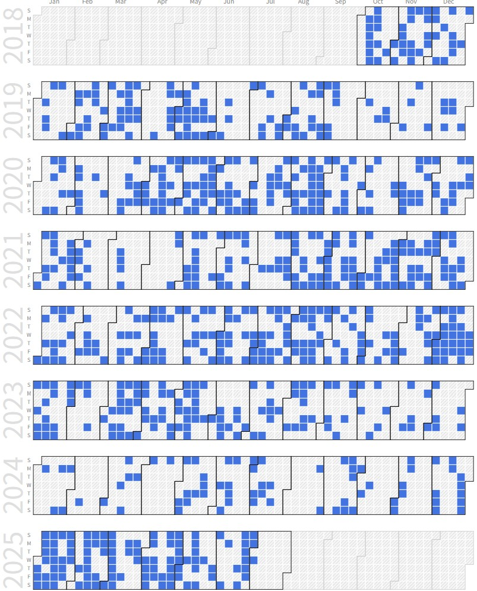
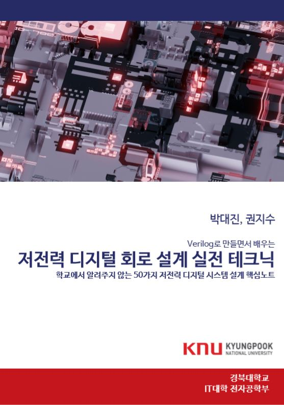

Jisu Kwon (Integrated Ph.D. Student)
 |
Ph.D Candidate. |
Repository Commit History
|  |
Introduction
Full Bio Sketch
 Mr. Kwon received his B.S. degree in Electronics Engineering at Kyungpook National University, Daegu, Republic of Korea in 2019 with early graduation. He is currently a integrated Ph.D. student in School of Electronic and Electrical Engineering at Kyungpook National University, Daegu, Republic of Korea. He is now pursuing toward his Ph.D. degree in AI-embedded System-on-Chip lab. His research interests include the behavior changeable neuromorphic deep learning processor based on partial software partial replacement and hardware reconfiguration architecture. Also, he conducts research about ultra-low-power AI accelerator design for resource-limited embedded system, and energy-efficientfastlow-memory-cost binary firmware replacement via firmware segmentation, and emulator-coupled Verilog RTL model runtime partial replacement framework development. He is currently pending 3 patents.
Mr. Kwon received his B.S. degree in Electronics Engineering at Kyungpook National University, Daegu, Republic of Korea in 2019 with early graduation. He is currently a integrated Ph.D. student in School of Electronic and Electrical Engineering at Kyungpook National University, Daegu, Republic of Korea. He is now pursuing toward his Ph.D. degree in AI-embedded System-on-Chip lab. His research interests include the behavior changeable neuromorphic deep learning processor based on partial software partial replacement and hardware reconfiguration architecture. Also, he conducts research about ultra-low-power AI accelerator design for resource-limited embedded system, and energy-efficientfastlow-memory-cost binary firmware replacement via firmware segmentation, and emulator-coupled Verilog RTL model runtime partial replacement framework development. He is currently pending 3 patents.
Research Topic
 In applications where firmware updates are frequent, such as edge devices in the Internet of Things (IoT) networks with embedded systems, the update process is considered a significant role in improving device performance. This research proposed a user insensible sliding firmware update technique based on a function block that reduces flash memory usage by handling only part of function blocks instead of the entire firmware, and device's pause time by allowing the user to use the device between function block updates. The proposed technique was evaluated using the target board with the actual ARM core. As a result, the flash memory usage overhead was reduced by 63.64%, paused minimum time was reduced by 79.98% at once update process, and energy consumption reduced by 78.78%. We show that user insensible sliding firmware update has great potential for implementing IoT networks that change behavior quickly by being aware of the environment.
In applications where firmware updates are frequent, such as edge devices in the Internet of Things (IoT) networks with embedded systems, the update process is considered a significant role in improving device performance. This research proposed a user insensible sliding firmware update technique based on a function block that reduces flash memory usage by handling only part of function blocks instead of the entire firmware, and device's pause time by allowing the user to use the device between function block updates. The proposed technique was evaluated using the target board with the actual ARM core. As a result, the flash memory usage overhead was reduced by 63.64%, paused minimum time was reduced by 79.98% at once update process, and energy consumption reduced by 78.78%. We show that user insensible sliding firmware update has great potential for implementing IoT networks that change behavior quickly by being aware of the environment.
 Iterative register-transfer level (RTL) simulation is essential for the edge processor design, but the RTL simulation speed is significantly slower in a system where various RTL models are complicatedly integrated. In this paper, we propose a novel metamorphic edge processor simulation framework that partitions the software part and virtualizes it in the system emulator to eject from full RTL simulation. The system emulator, which is written in a high-level language, and the Verilog simulation have different abstraction levels, thus the Verilog procedural interface (VPI) module is plugged into the Verilog simulator to connect with the virtual layer interface. In the system emulator, a Verilog RTL simulation session corresponding to a specific parameter set can be dynamically loaded at runtime to provide metamorphism by flexible partial parameter-driven RTL model replacement. We applied the proposed framework to finite impulse response (FIR) filter, and it is successfully demonstrated and achieved simulation speedup for given parameters.
Iterative register-transfer level (RTL) simulation is essential for the edge processor design, but the RTL simulation speed is significantly slower in a system where various RTL models are complicatedly integrated. In this paper, we propose a novel metamorphic edge processor simulation framework that partitions the software part and virtualizes it in the system emulator to eject from full RTL simulation. The system emulator, which is written in a high-level language, and the Verilog simulation have different abstraction levels, thus the Verilog procedural interface (VPI) module is plugged into the Verilog simulator to connect with the virtual layer interface. In the system emulator, a Verilog RTL simulation session corresponding to a specific parameter set can be dynamically loaded at runtime to provide metamorphism by flexible partial parameter-driven RTL model replacement. We applied the proposed framework to finite impulse response (FIR) filter, and it is successfully demonstrated and achieved simulation speedup for given parameters.
Publications
Authored Books
Low-Power Digital System Design - Practical Approach
|  | Mr. Kwon contributed his effort on wriring this book as co-author. This book covers low-power system-on-chip design methodologies and implementation techniques, from gate-level to architectural approach and software-hardware interfaces
|
Journal Publications (KCI 4, SCOPUS 1, SCI 2)
Jisu Kwon, Jeonghun Cho, and Daejin Park. Efficient Flash Memory Access Power Reduction Techniques for IoT-Driven Rare-Event Logging Application (KCI) IEMEK Journal of Embedded Systems and Applications, 14(2):87-96, 2019.
Jisu Kwon and Daejin Park. Acceleration of ECC Computation for Robust Massive Data Reception under GPU-based Embedded Systems (KCI) Journal of the Korea Institute of Information and Communication Engineering, 24(7):956-962, 2020.
Jisu Kwon, Moon Gi Seok, and Daejin Park. GPU-Based ECC Decode Unit for Efficient Massive Data Reception Acceleration (SCOPUS) Journal of Information Processing Systems, 16(6):1359-1371, 2020.
Jisu Kwon and Daejin Park. Velocity and Distance Estimation-based Sensing Data Collection Interval Control Technique for Vehicle Data-Processing Overhead Reduction (KCI) Journal of the Korea Institute of Information and Communication Engineering, 24(12):1697-1703, 2020.
Jongheon Baek, Jiwoong Jung, Minsung Kim, Jisu Kwon, and Daejin Park. Low-Power Metamorphic MCU using Partial Firmware Update Method for Irregular Target Systems Control (KCI) Journal of the Korea Institute of Information and Communication Engineering, 25, 2021.
Jisu Kwon, Moon Gi Seok, and Daejin Park. Low-Power Fast Partial Firmware Update Technique of On-Chip Flash Memory for Reliable Embedded IoT Microcontroller (SCI) IEICE Transactions on Electronics, 2021.
Jisu Kwon and Daejin Park*. Hardware/Software Co-design for TinyML Voice-Recognition Application on Resource Frugal Edge Devices (SCI) Applied Sciences, 11(22):11073-11087, 2021.
Jisu Kwon and Daejin Park. Low-Energy Sensor Processing Techniques using Kalman Filter-based Position Estimation in Cooperative Vehicle IoT Applications (SCI) (On Writing) IEEE Access, 2021.
Seungmin Lee, Jisu Kwon, and Daejin Park. Optimized Replication of ADC-based Particle Counting Algorithm with Reconfigurable Multi-Variables in Pseudo-Supervised Digital Twining of Reference Dust Sensor Systems (SCI) (On Writing) IEEE Access, 2021.
Jisu Kwon, Seungmin Lee, and Daejin Park. Simulated Annealing-based Fast Replication of Reconfigurable Multi-Variables for Digital Twining of Particle Counting Algorithm in Dust Sensor Systems (SCI) (On Writing) IEEE Access, 2021.
Seungmin Lee, Jisu Kwon, and Daejin Park. Runtime Tracking-based Replication of Dust Particle Sensor Algorithm using Transfer Function Learning for Dust Sensor Systems (SCI) (On Writing) IEEE Access, 2021.
Jisu Kwon, Seungmin Lee, and Daejin Park. Efficient Dust Particle Counter Realization using Runtime Adapation of Segmented Transfer Function for Lightweighted Microcontroller-based Dust Sensor Systems (SCI) (On Writing) IEEE Access, 2021.
Conference Publications (Intl. 7)
Jisu Kwon and Daejin Park. Efficient Flash Memory Access Power Reduction Techniques for IoT-Driven Rare-Event Logging Application In 2019 IEEE COOLChips, 2019.
J. Kwon, J. Cho, and D. Park. Function Block-Based Robust Firmware Update Technique for Additional Flash-Area/Energy-Consumption Overhead Reduction In 2019 International Symposium on Intelligent Signal Processing and Communication Systems (ISPACS), pages 1-2, 2019.
J. Kwon and D. Park. Implementation of Computation-Efficient Sensor Network for Kalman Filter-Based Intelligent Position-Aware Application In 2020 International Conference on Artificial Intelligence in Information and Communication (ICAIIC), pages 565-568, 2020.
Jisu Kwon, Moon Gi Seok, and Daejin Park. User Insensible Sliding Firmware Update Technique for Flash-Area/Time-Cost Reduction toward Low-Power Embedded Software Replacement In 2020 IEEE COOLChips, 2020.
Minsung Kim, Jongheon Baek, Jiwoong Jung, Jisu Kwon, and Daejin Park. Segmented Polynomial Approximation for Controlled System Characteristic Estimation on Lightweight Edge Device In IEEE ICCE-Asia 2020, 2020.
Jisu Kwon, Sejong Oh, and Daejin Park. Toward Data-Adaptable TinyML using Model Partial Replacement for Resource Frugal Edge Device In HPC-Asia 2021, 2021.
Jisu Kwon, Sejong Oh, and Daejin Park. Metamorphic Edge Processors Using Flexible Runtime Partial Replacement of Software-Embedded Verilog RTL Models In IEEE ISCAS 2021, 2021.
Patents
Fast Firmware Update Method using Multi-Level QR Code-Encoded F/W In Korea Patent and Tradmark Office, June 2020. Korea Patent Pending
User-Incensible Sliding Partial Firmware Update Method In Korea Patent and Tradmark Office, June 2020. Korea Patent Pending
Safe Firmware Update Method using Partial Update of Indirect Function Call Remap Table In Korea Patent and Tradmark Office, June 2020. Korea Patent Pending
Participation in International Conference
IEEE ASP-DAC 2019, Tyoko, Japan
IEEE COOLChips 2019, Yokohama, Japan
IEEE ISPACS 2019, Taipei, Taiwan
IEEE ICAIIC 2020, Fukuoka, Japan
IEEE COOLChips 2020, Tokyo, Japan
IEEE ICCE-Asia 2020, Busan, Korea
IEEE HPC-Asia 2021, Jeju, Korea
IEEE ISCAS 2021, Daegu, Korea